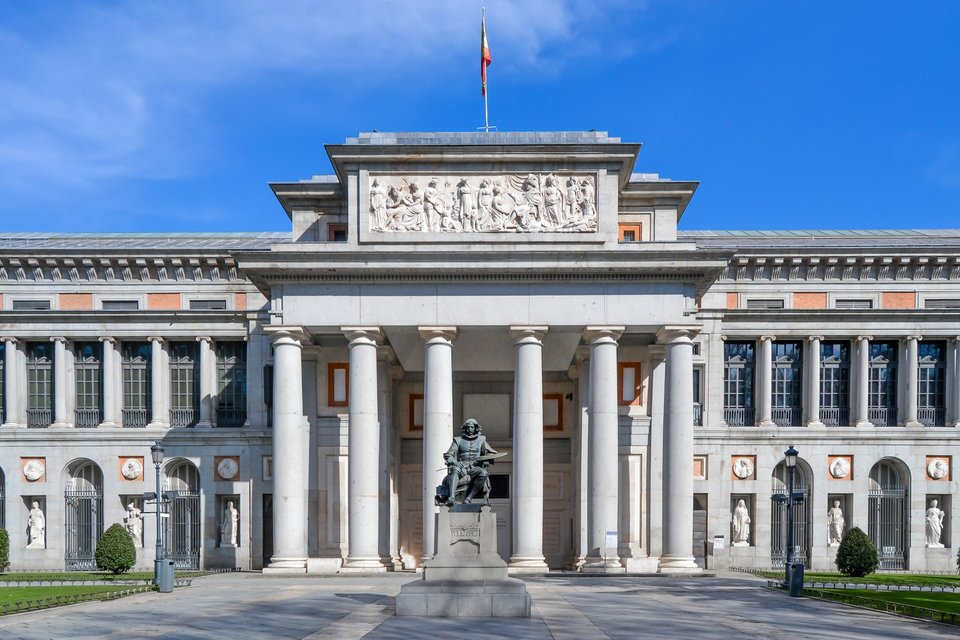
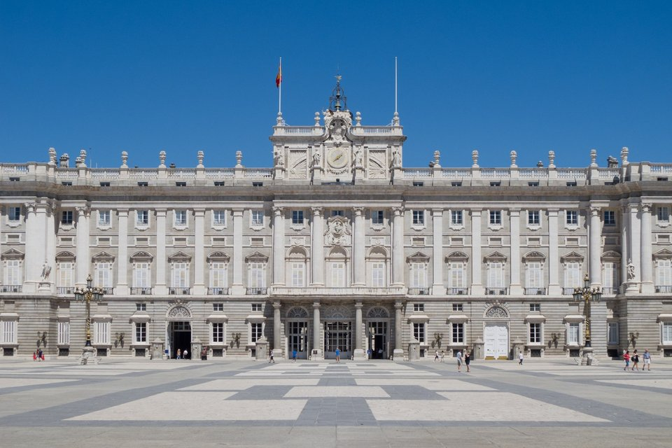
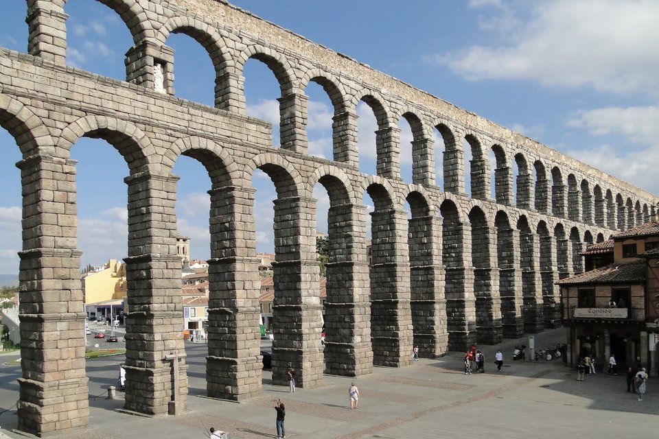

Spain audio guides
39 guides across Barcelona, Madrid, Andalusia, northern Spain and the islands, recorded in 10 languages. Guides bought on the website play online in your browser (with the read-along script); offline listening and auto-play at each stop are in the free Earwise app. Checkout is not open yet; prices below are the guide prices (Free, €1.99, or €2.99).
Barcelona & Catalonia


Madrid & Castile

Prado Museum
Madrid

Royal Palace of Madrid
Madrid

Museo Reina Sofía
Madrid

Madrid old town walk
Madrid

Santiago Bernabéu Stadium Tour
Madrid

Toledo old town
Toledo

Segovia
Segovia

El Escorial
San Lorenzo de El Escorial

Walls of Ávila
Ávila

Salamanca
Salamanca

Cuenca
Cuenca
Andalusia


Northern Spain & Extremadura


Valencia & the Islands


No Spain guide matches that.